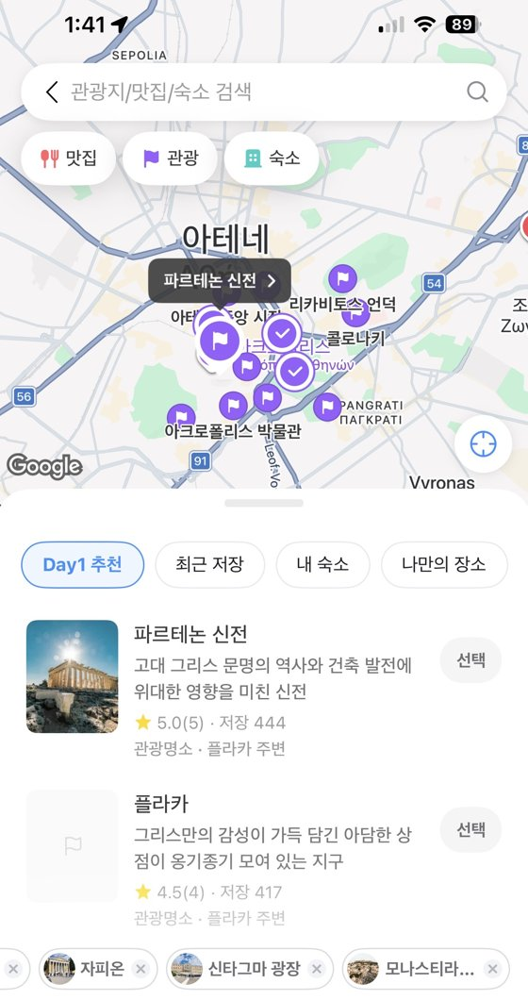
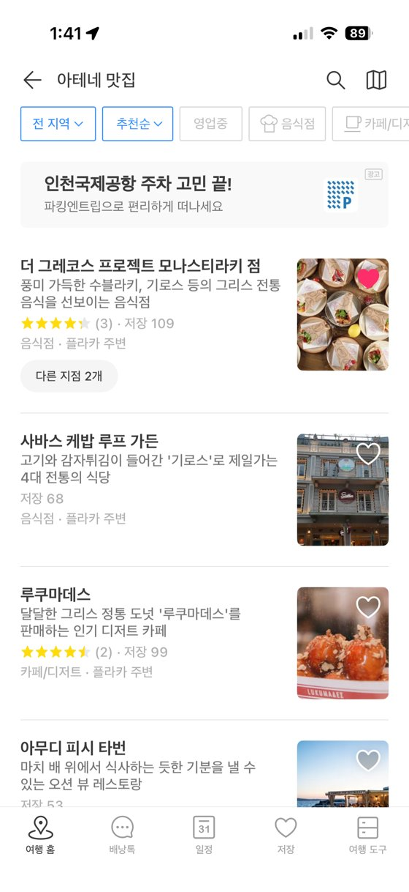
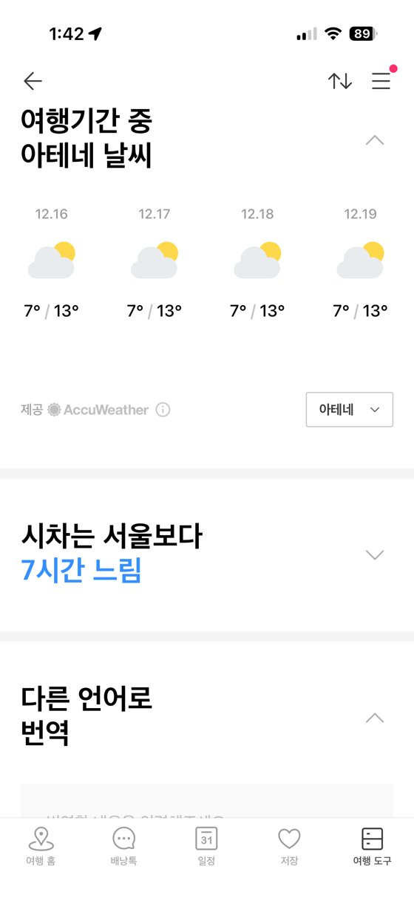

트리플 (TRIPLE)여행의 A to Z, 앱 하나로



저는 사실 파워 P라 복잡하게 미리미리 계획하는 것에 매우 취약한데 그런 제가 여행 갈 때마다 제일 먼저 여는 앱 - 항공권, 숙소, 투어 예약부터 일정, 지도, 가계부까지 여행 준비가 앱 하나로 끝나서 굉장히 편해요. 가고 싶은 곳을 일단 막 저장해 두고, 지도 보면서 날짜별로 AI로 동선을 짜다 보면 엑셀로 일정표 만들던 시절이 아득해집니다.. 같이 간 사람들과 일정도 공유하고, 현지 날씨, 체크리스트까지 다 챙겨줘요. 페이지 작성하면서 알게 된 사실인데, 곧 NOL과 통합된다고 하네요! 아쉬우면서도 또 어떻게 좋아질지 기대해보는 것으로 ㅎㅎ